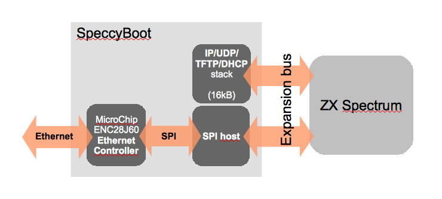

SpeccyBoot is about booting a ZX Spectrum over an Ethernet network. Network booting was used for diskless workstation a few years back, but is still used for booting embedded development boards. I thought it'd be interesting to try this with the Spectrum.
In general, network booting works as follows:
SpeccyBoot is a device to do this with a Spectrum. The device connects to the Spectrum's expansion port, and to your local network using standard Ethernet. SpeccyBoot uses standard IP-based protocols, so it works with standard software.
This allows us to load virtually any program onto the Spectrum in a matter of seconds, instead of the tedious and error-prone cassette loading. Programs are packaged as .z80 snapshots, which can be created from any modern Spectrum emulator, or obtained from the World of Spectrum archives.
The picture below gives a logical view of SpeccyBoot's internals. The device connects to the Spectrum's expansion bus connector, and uses the MicroChip ENC28J60 Ethernet Controller to connect to Ethernet. The controller communicates with the Spectrum using the SPI protocol using a very simple SPI host. Finally, the device also contains a 16kB ROM (FRAM/Flash/EEPROM/EPROM) with a dedicated stack for the protocols involved.

The SpeccyBoot hardware is controlled by writing to and reading from a single 8-bit control register, located at address 0x9F in the Z80 I/O address space. Data from SpeccyBoot is read back from the same address. The individual bits have different have the following meaning:
| Bit | Meaning when written | Meaning when read |
|---|---|---|
| 0 | SPI SCK: SPI clock signal (strobe). | SPI MISO: SPI data from ENC28J60. |
| 1-2 | Unused: the SpeccyBoot stack will write 0 to these bits. | Unused: ignore |
| 3 | ETH CS: Chip select signal for ENC28J60 (active low). | |
| 4 | FRAM/EEPROM Bank select: if set to 1, the alternate half of the EEPROM/FRAM will be paged in. The SpeccyBoot stack will write 0 to this bit. You can use the alternate page to anything you like (hint: Interface 2 images work perfectly). | |
| 5 | FRAM/EEPROM CS: Chip select signal for EEPROM/FRAM. When this signal is asserted (low), the ROMCS signal (for the Spectrum's internal ROM) will automatically be forced high (deasserted). | |
| 6 | ETH RESET: Reset signal for the ENC28J60 Ethernet controller (active low). | |
| 7 | SPI MOSI: SPI data to ENC28J60. |
The software stack implements (needed parts of) the following standard IETF network protocols:
| RFC 768 | UDP (User Datagram Protocol) | August 1980 |
| RFC 791 | IP (Internet Protocol) | September 1981 |
| RFC 826 | ARP (Address Resolution Protocol) | November 1982 |
| RFC 906 | Bootstrap Loading using TFTP | June 1984 |
| RFC 1350 | TFTP (Trivial File Transfer Protocol) | July 1992 |
| RFC 2131 | DHCP (Dynamic Host Configuration Protocol) | March 1997 |
| RFC 3164 | BSD Syslog Protocol | August 2001 |
Although these protocols are as old as (in some cases, even older than) the Spectrum, these IP-family protocols are supported by all personal computers since the mid 1990s.
SpeccyBoot also includes a bit-banged SPI stack (capable of a transfer bandwidth of about 57kbit/s), a menu selection facility, and support for loading and executing Z80 snapshots.
The code is available at SourceForge.
I'm using SpeccyBoot with a Spectrum 128. It should work equally well with a 48k machine. A 16k machine may work, but don't count on it.
The later Amstrad Spectrum machines (+2B/+3) have a different expansion connector, and will not work directly with the SpeccyBoot as described here. It's certainly possible to design a slightly modified SpeccyBoot board to connect to one of these machines; I just haven't had the opportunity to do so myself.
| December 1, 2009 | Version 1.3: Fuse emulator support |
| November 1, 2009 | Version 1.2: 128k snapshot support |
| October 17, 2009 | Version 1.1: bug fixes, simplified .wav loader |
| August 13, 2009 | Version 1.0: Menu selection working |
| June 4, 2009 | Booted from .z80 snapshot over Ethernet |
| May 9, 2009 | Loaded .z80 snapshot in emulated environment (not yet over real Ethernet) |
| April 26, 2009 | DHCP client, TFTP file transfer working |
| April 19, 2009 | The Speccy responds to PING (ICMP REPLY) |
| March 25, 2009 | Booting from FRAM works (Hungry Horace, cartridge version) |
| March 17, 2009 | Bit-banged SPI works (BASIC hack to flash activity/link LEDs) |